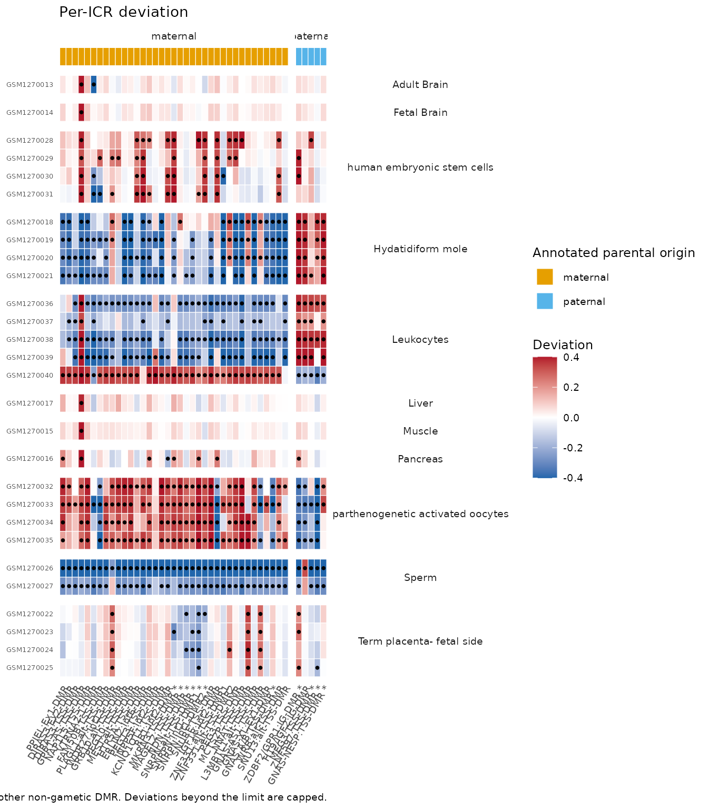
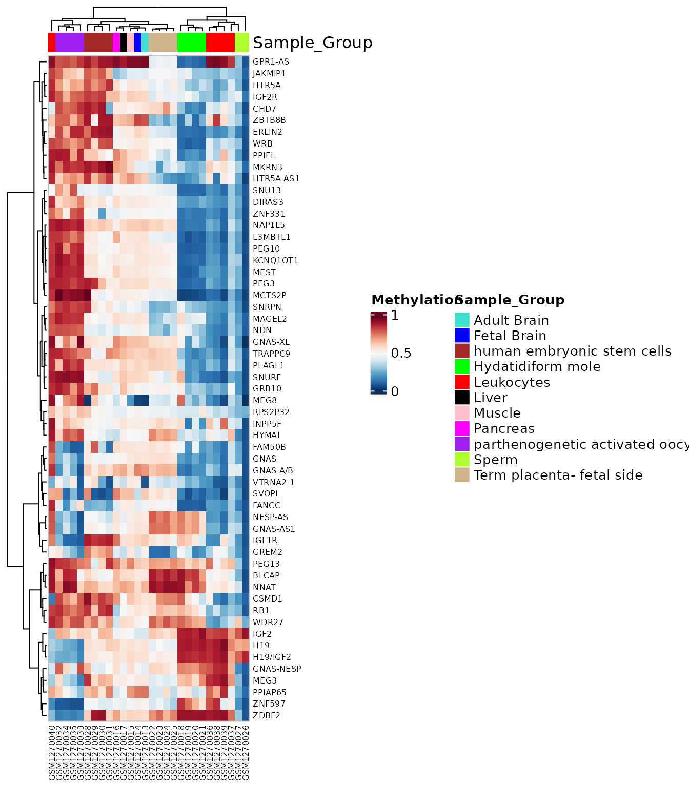
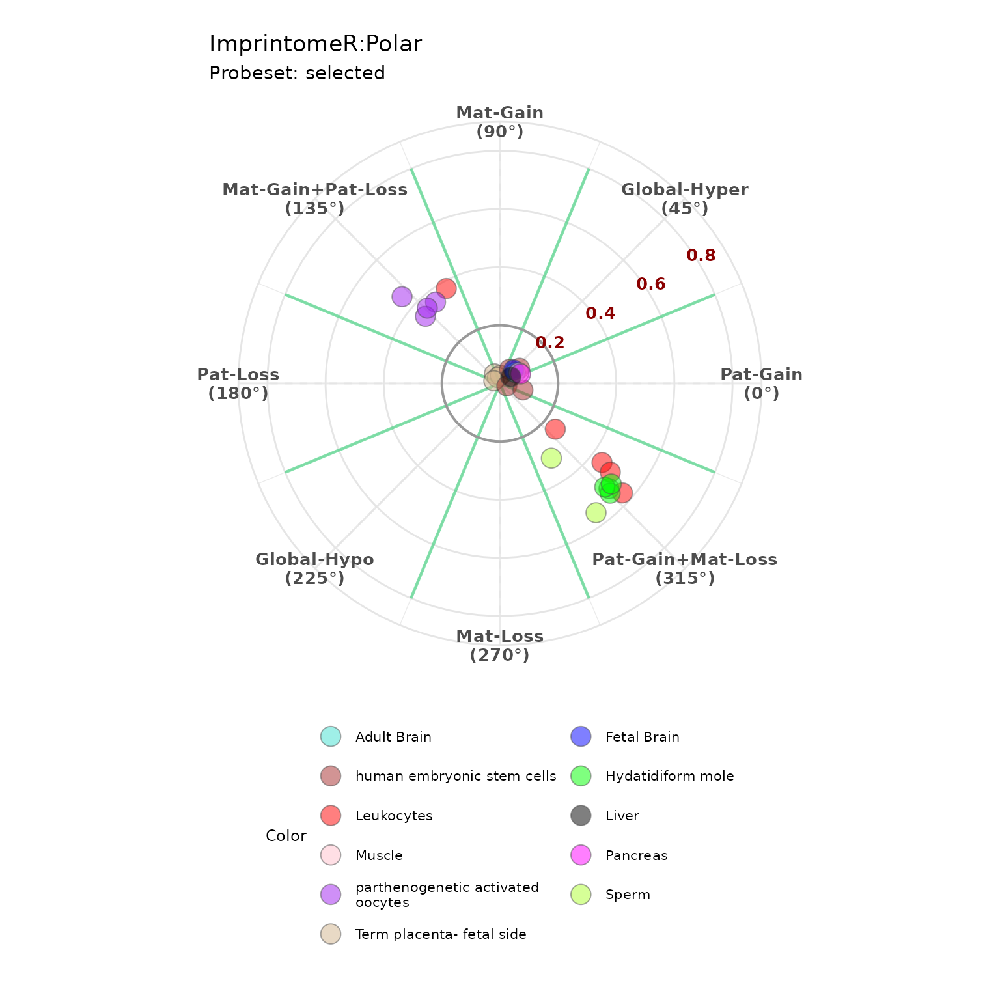
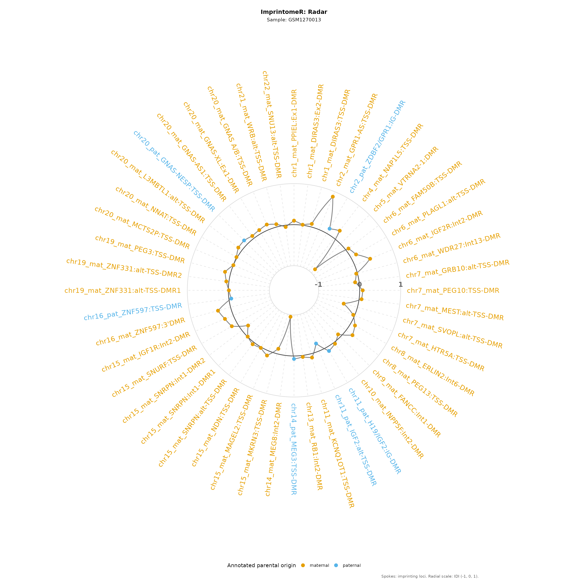
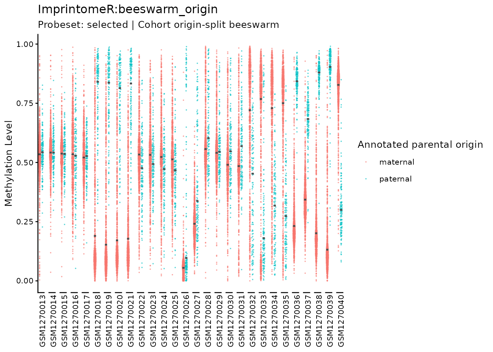

imprintomeR Basic Workflow (Non-S4)
imprintomeR Team
Source:vignettes/imprintomeR-workflow-basic.Rmd
imprintomeR-workflow-basic.RmdOverview
This vignette runs the core imprintomeR analysis on a plain beta
table and a metadata table, without building an
ImprintomeSet. It covers sample-level scores, per-ICR
calls, uncertainty, and the plots that take tables directly.
Defaults to keep in mind:
- the genome build is hg38
(
genome = "hg19"for GRCh37 coordinates); - the core
selectedpanel is scored on gametic ICRs (dmr_type = "gametic");dmr_type = "all"scores every probe; - without controls, scores are relative to the fixed 0.5 reference;
with controls (
reference_group), they are centred on the controls.
The polar, radar, beeswarm and mirror-density plots are drawn by
plot() on an ImprintomeSet; the last section
shows the short route from the same tables.
1. Load data
The metadata table needs Sample_Name and
Sample_Group. The beta table has one row per probe (first
column: probe ID) and one column per sample, with beta values from
QC-clean data.
library(imprintomeR)
meta <- LoadMeta("meta.tsv")
beta <- LoadBeta("cleaned_beta.tsv")This vignette runs on the bundled example, beta values of the 782
probes of the selected panel for 28 samples of GEO GSE52576
(450K; hydatidiform moles, parthenogenetic cells, uniparental-disomy
leukocytes, somatic tissues and gametes):
library(imprintomeR)
#>
#> Attaching package: 'imprintomeR'
#> The following object is masked from 'package:base':
#>
#> beta
beta <- imprintome_example("beta")
meta <- imprintome_example("meta")
dim(beta)
#> [1] 782 28
table(meta$Sample_Group)
#>
#> Adult Brain Fetal Brain
#> 1 1
#> human embryonic stem cells Hydatidiform mole
#> 4 4
#> Leukocytes Liver
#> 5 1
#> Muscle Pancreas
#> 1 1
#> parthenogenetic activated oocytes Sperm
#> 4 2
#> Term placenta- fetal side
#> 42. Sample-level scores
AnalyzeImprintStatus() returns one row per sample: the
paternal and maternal median deviations, the Imprinting Deviation Score
(IDS), its direction (Angle), the sector label (Mechanism) and the
status at the IDS cutoff.
res <- AnalyzeImprintStatus(betaFile = beta, metaFile = meta, probeset = "selected", ids_cutoff = 0.2)
#>
#> [meta dim: 28 x 5 ]
#> [beta dim: 782 x 29 ]
#> [meta dim: 28 x 5 ]
#> [beta dim: 782 x 28 ]
#> [SubsetBeta] subset by probeset [query: 782; matched probes: 782 ]
res[, c("Sample_Name", "Sample_Group", "n_paternal_probes", "n_maternal_probes", "IDS", "Angle", "Mechanism", "Status")]
#> Sample_Name Sample_Group n_paternal_probes
#> GSM1270013 GSM1270013 Adult Brain 48
#> GSM1270014 GSM1270014 Fetal Brain 48
#> GSM1270015 GSM1270015 Muscle 48
#> GSM1270016 GSM1270016 Pancreas 48
#> GSM1270017 GSM1270017 Liver 48
#> GSM1270018 GSM1270018 Hydatidiform mole 48
#> GSM1270019 GSM1270019 Hydatidiform mole 48
#> GSM1270020 GSM1270020 Hydatidiform mole 48
#> GSM1270021 GSM1270021 Hydatidiform mole 48
#> GSM1270022 GSM1270022 Term placenta- fetal side 48
#> GSM1270023 GSM1270023 Term placenta- fetal side 48
#> GSM1270024 GSM1270024 Term placenta- fetal side 48
#> GSM1270025 GSM1270025 Term placenta- fetal side 48
#> GSM1270026 GSM1270026 Sperm 48
#> GSM1270027 GSM1270027 Sperm 48
#> GSM1270028 GSM1270028 human embryonic stem cells 48
#> GSM1270029 GSM1270029 human embryonic stem cells 48
#> GSM1270030 GSM1270030 human embryonic stem cells 48
#> GSM1270031 GSM1270031 human embryonic stem cells 48
#> GSM1270032 GSM1270032 parthenogenetic activated oocytes 48
#> GSM1270033 GSM1270033 parthenogenetic activated oocytes 48
#> GSM1270034 GSM1270034 parthenogenetic activated oocytes 48
#> GSM1270035 GSM1270035 parthenogenetic activated oocytes 48
#> GSM1270036 GSM1270036 Leukocytes 48
#> GSM1270037 GSM1270037 Leukocytes 48
#> GSM1270038 GSM1270038 Leukocytes 48
#> GSM1270039 GSM1270039 Leukocytes 48
#> GSM1270040 GSM1270040 Leukocytes 48
#> n_maternal_probes IDS Angle Mechanism
#> GSM1270013 499 0.065 35.4 ROI
#> GSM1270014 499 0.066 44.7 ROI
#> GSM1270015 499 0.075 29.6 ROI
#> GSM1270016 499 0.078 24.7 ROI
#> GSM1270017 499 0.043 31.0 ROI
#> GSM1270018 499 0.521 316.0 Pat-Gain+Mat-Loss
#> GSM1270019 499 0.535 315.1 Pat-Gain+Mat-Loss
#> GSM1270020 499 0.507 315.3 Pat-Gain+Mat-Loss
#> GSM1270021 499 0.516 317.9 Pat-Gain+Mat-Loss
#> GSM1270022 499 0.038 119.8 ROI
#> GSM1270023 499 0.028 88.3 ROI
#> GSM1270024 499 0.022 113.2 ROI
#> GSM1270025 499 0.023 156.8 ROI
#> GSM1270026 499 0.554 306.6 Pat-Gain+Mat-Loss
#> GSM1270027 499 0.312 304.5 Pat-Gain+Mat-Loss
#> GSM1270028 499 0.085 37.7 ROI
#> GSM1270029 499 0.058 56.1 ROI
#> GSM1270030 499 0.025 340.4 ROI
#> GSM1270031 499 0.082 344.0 ROI
#> GSM1270032 499 0.357 128.4 Mat-Gain+Pat-Loss
#> GSM1270033 499 0.450 138.5 Mat-Gain+Pat-Loss
#> GSM1270034 499 0.345 138.0 Mat-Gain+Pat-Loss
#> GSM1270035 499 0.360 134.0 Mat-Gain+Pat-Loss
#> GSM1270036 499 0.444 322.2 Pat-Gain+Mat-Loss
#> GSM1270037 499 0.247 320.4 Pat-Gain+Mat-Loss
#> GSM1270038 499 0.487 321.2 Pat-Gain+Mat-Loss
#> GSM1270039 499 0.565 318.2 Pat-Gain+Mat-Loss
#> GSM1270040 499 0.375 119.5 Mat-Gain+Pat-Loss
#> Status
#> GSM1270013 Normal
#> GSM1270014 Normal
#> GSM1270015 Normal
#> GSM1270016 Normal
#> GSM1270017 Normal
#> GSM1270018 Imprinting Alteration
#> GSM1270019 Imprinting Alteration
#> GSM1270020 Imprinting Alteration
#> GSM1270021 Imprinting Alteration
#> GSM1270022 Normal
#> GSM1270023 Normal
#> GSM1270024 Normal
#> GSM1270025 Normal
#> GSM1270026 Imprinting Alteration
#> GSM1270027 Imprinting Alteration
#> GSM1270028 Normal
#> GSM1270029 Normal
#> GSM1270030 Normal
#> GSM1270031 Normal
#> GSM1270032 Imprinting Alteration
#> GSM1270033 Imprinting Alteration
#> GSM1270034 Imprinting Alteration
#> GSM1270035 Imprinting Alteration
#> GSM1270036 Imprinting Alteration
#> GSM1270037 Imprinting Alteration
#> GSM1270038 Imprinting Alteration
#> GSM1270039 Imprinting Alteration
#> GSM1270040 Imprinting AlterationOther selections and references use the same call:
res_all <- AnalyzeImprintStatus(beta, meta, probeset = "selected", dmr_type = "all") # every probe
#>
#> [meta dim: 28 x 5 ]
#> [beta dim: 782 x 29 ]
#> [meta dim: 28 x 5 ]
#> [beta dim: 782 x 28 ]
#> [SubsetBeta] subset by probeset [query: 782; matched probes: 782 ]
res_11p <- AnalyzeImprintStatus(beta, meta, probeset = "chr11p15") # 11p15.5 locus panel
#>
#> [meta dim: 28 x 5 ]
#> [beta dim: 782 x 29 ]
#> [meta dim: 28 x 5 ]
#> [beta dim: 782 x 28 ]
#> [SubsetBeta] subset by probeset [query: 82; matched probes: 77 ]
# With control samples in the cohort (Sample_Group "control"):
# res_ctrl <- AnalyzeImprintStatus(beta, meta, probeset = "selected", reference_group = "control")3. Uncertainty
n_boot adds bootstrap intervals for IDS and Angle and
Mechanism_support, the fraction of replicates in the
reported sector. Use at least 1,000 replicates for reporting.
res_boot <- AnalyzeImprintStatus(beta, meta, probeset = "selected", n_boot = 200, seed = 1)
#>
#> [meta dim: 28 x 5 ]
#> [beta dim: 782 x 29 ]
#> [meta dim: 28 x 5 ]
#> [beta dim: 782 x 28 ]
#> [SubsetBeta] subset by probeset [query: 782; matched probes: 782 ]
res_boot[, c("Sample_Name", "IDS", "IDS_lower", "IDS_upper", "Mechanism", "Mechanism_support")]
#> Sample_Name IDS IDS_lower IDS_upper Mechanism
#> GSM1270013 GSM1270013 0.065 0.044 0.108 ROI
#> GSM1270014 GSM1270014 0.066 0.045 0.111 ROI
#> GSM1270015 GSM1270015 0.075 0.038 0.095 ROI
#> GSM1270016 GSM1270016 0.078 0.049 0.123 ROI
#> GSM1270017 GSM1270017 0.043 0.014 0.064 ROI
#> GSM1270018 GSM1270018 0.521 0.373 0.551 Pat-Gain+Mat-Loss
#> GSM1270019 GSM1270019 0.535 0.453 0.560 Pat-Gain+Mat-Loss
#> GSM1270020 GSM1270020 0.507 0.378 0.542 Pat-Gain+Mat-Loss
#> GSM1270021 GSM1270021 0.516 0.460 0.555 Pat-Gain+Mat-Loss
#> GSM1270022 GSM1270022 0.038 0.014 0.126 ROI
#> GSM1270023 GSM1270023 0.028 0.010 0.104 ROI
#> GSM1270024 GSM1270024 0.022 0.004 0.075 ROI
#> GSM1270025 GSM1270025 0.023 0.007 0.098 ROI
#> GSM1270026 GSM1270026 0.554 0.513 0.601 Pat-Gain+Mat-Loss
#> GSM1270027 GSM1270027 0.312 0.299 0.393 Pat-Gain+Mat-Loss
#> GSM1270028 GSM1270028 0.085 0.054 0.140 ROI
#> GSM1270029 GSM1270029 0.058 0.029 0.101 ROI
#> GSM1270030 GSM1270030 0.025 0.013 0.145 ROI
#> GSM1270031 GSM1270031 0.082 0.018 0.138 ROI
#> GSM1270032 GSM1270032 0.357 0.223 0.426 Mat-Gain+Pat-Loss
#> GSM1270033 GSM1270033 0.450 0.262 0.486 Mat-Gain+Pat-Loss
#> GSM1270034 GSM1270034 0.345 0.217 0.409 Mat-Gain+Pat-Loss
#> GSM1270035 GSM1270035 0.360 0.188 0.424 Mat-Gain+Pat-Loss
#> GSM1270036 GSM1270036 0.444 0.397 0.464 Pat-Gain+Mat-Loss
#> GSM1270037 GSM1270037 0.247 0.230 0.276 Pat-Gain+Mat-Loss
#> GSM1270038 GSM1270038 0.487 0.434 0.501 Pat-Gain+Mat-Loss
#> GSM1270039 GSM1270039 0.565 0.489 0.577 Pat-Gain+Mat-Loss
#> GSM1270040 GSM1270040 0.375 0.355 0.396 Mat-Gain+Pat-Loss
#> Mechanism_support
#> GSM1270013 1.000
#> GSM1270014 1.000
#> GSM1270015 1.000
#> GSM1270016 1.000
#> GSM1270017 1.000
#> GSM1270018 0.890
#> GSM1270019 0.985
#> GSM1270020 0.970
#> GSM1270021 1.000
#> GSM1270022 1.000
#> GSM1270023 1.000
#> GSM1270024 1.000
#> GSM1270025 1.000
#> GSM1270026 0.990
#> GSM1270027 1.000
#> GSM1270028 1.000
#> GSM1270029 0.995
#> GSM1270030 1.000
#> GSM1270031 1.000
#> GSM1270032 0.710
#> GSM1270033 0.735
#> GSM1270034 0.720
#> GSM1270035 0.735
#> GSM1270036 1.000
#> GSM1270037 1.000
#> GSM1270038 1.000
#> GSM1270039 1.000
#> GSM1270040 0.995With a control reference, n_perm adds an exploratory
permutation test of the dependence on the annotated parental origin
(origin_perm_p; whole ICRs are permuted by default),
resample_reference = TRUE lets the bootstrap intervals
include the uncertainty of the control reference, and
CalibrateIDS() derives an IDS cutoff from the controls:
# res_ctrl <- AnalyzeImprintStatus(beta, meta, probeset = "selected", reference_group = "control",
# n_boot = 1000, n_perm = 1000, seed = 1)
# cal <- CalibrateIDS(res_ctrl, controls = "control", method = "quantile", probs = 0.99)
# attr(cal, "calibration")4. Per-ICR calls
AnalyzeICRStatus() scores each imprinting control region
on its own; SummarizeICRStatus() counts the altered ICRs
per sample and flags multi-locus disturbance (MLID). The call thresholds
(|deviation| ≥ 0.175 and |z| ≥ 2) assume control samples; without
controls only the deviation criterion applies and the calls are
exploratory.
icr <- AnalyzeICRStatus(beta, meta, probeset = "selected")
#>
#> [meta dim: 28 x 5 ]
#> [beta dim: 782 x 29 ]
#> [meta dim: 28 x 5 ]
#> [beta dim: 782 x 28 ]
#> [SubsetBeta] subset by probeset [query: 782; matched probes: 782 ]
head(icr[, c("Sample_Name", "ICR_name", "ORIGIN", "DMR_type", "deviation", "direction", "altered")])
#> Sample_Name ICR_name ORIGIN DMR_type deviation direction altered
#> 1 GSM1270013 PPIEL:Ex1-DMR maternal gametic 0.048 gain FALSE
#> 2 GSM1270013 DIRAS3:Ex2-DMR maternal gametic 0.006 gain FALSE
#> 3 GSM1270013 DIRAS3:TSS-DMR maternal gametic 0.031 gain FALSE
#> 4 GSM1270013 GPR1-AS:TSS-DMR maternal gametic 0.435 gain TRUE
#> 5 GSM1270013 ZDBF2/GPR1:IG-DMR paternal ambiguous 0.067 gain FALSE
#> 6 GSM1270013 NAP1L5:TSS-DMR maternal gametic 0.116 gain FALSE
icr_summary <- SummarizeICRStatus(icr)
icr_summary[, c("Sample_Name", "Sample_Group", "n_icrs", "n_altered", "n_gain", "n_loss", "MLID")]
#> Sample_Name Sample_Group n_icrs n_altered n_gain n_loss
#> 1 GSM1270013 Adult Brain 41 1 1 0
#> 2 GSM1270014 Fetal Brain 41 1 1 0
#> 3 GSM1270015 Muscle 41 1 1 0
#> 4 GSM1270016 Pancreas 41 8 7 1
#> 5 GSM1270017 Liver 41 1 1 0
#> 6 GSM1270018 Hydatidiform mole 41 26 9 17
#> 7 GSM1270019 Hydatidiform mole 41 30 7 23
#> 8 GSM1270020 Hydatidiform mole 41 30 7 23
#> 9 GSM1270021 Hydatidiform mole 41 29 4 25
#> 10 GSM1270022 Term placenta- fetal side 41 7 4 3
#> 11 GSM1270023 Term placenta- fetal side 41 7 4 3
#> 12 GSM1270024 Term placenta- fetal side 41 7 4 3
#> 13 GSM1270025 Term placenta- fetal side 41 6 4 2
#> 14 GSM1270026 Sperm 41 41 1 40
#> 15 GSM1270027 Sperm 41 37 0 37
#> 16 GSM1270028 human embryonic stem cells 41 14 14 0
#> 17 GSM1270029 human embryonic stem cells 41 12 12 0
#> 18 GSM1270030 human embryonic stem cells 41 10 9 1
#> 19 GSM1270031 human embryonic stem cells 41 12 11 1
#> 20 GSM1270032 parthenogenetic activated oocytes 41 34 27 7
#> 21 GSM1270033 parthenogenetic activated oocytes 41 37 29 8
#> 22 GSM1270034 parthenogenetic activated oocytes 41 29 24 5
#> 23 GSM1270035 parthenogenetic activated oocytes 41 36 28 8
#> 24 GSM1270036 Leukocytes 41 35 6 29
#> 25 GSM1270037 Leukocytes 41 16 5 11
#> 26 GSM1270038 Leukocytes 41 35 6 29
#> 27 GSM1270039 Leukocytes 41 32 6 26
#> 28 GSM1270040 Leukocytes 41 39 34 5
#> MLID
#> 1 FALSE
#> 2 FALSE
#> 3 FALSE
#> 4 TRUE
#> 5 FALSE
#> 6 TRUE
#> 7 TRUE
#> 8 TRUE
#> 9 TRUE
#> 10 TRUE
#> 11 TRUE
#> 12 TRUE
#> 13 TRUE
#> 14 TRUE
#> 15 TRUE
#> 16 TRUE
#> 17 TRUE
#> 18 TRUE
#> 19 TRUE
#> 20 TRUE
#> 21 TRUE
#> 22 TRUE
#> 23 TRUE
#> 24 TRUE
#> 25 TRUE
#> 26 TRUE
#> 27 TRUE
#> 28 TRUEPer-ICR calls cover all annotated ICRs, secondary DMRs included;
dmr_type = "gametic" restricts them.
5. Heatmaps from tables
# Samples x ICRs, with a colour bar of each ICR's annotated parental origin
PlotICRHeatmap(icr)
# Median beta per gene label of the panel, genes x samples
hm <- BetaHeatmapByGene(
beta = beta,
meta = meta,
probeset = "selected",
SAMPLEID = "Sample_Name",
annoColumn = "Sample_Group",
clusterRows = TRUE,
clusterColumns = TRUE
)
hm
BetaHeatmapByGene() takes the median of each gene
label’s probes, so one ICR can appear as several rows when its probes
carry different gene labels; PlotICRHeatmap() shows one
column per ICR.
6. Polar, radar and other plots
These plots are drawn by plot() on an
ImprintomeSet, which can be built from the same tables:
x <- ImprintomeSet(
beta = beta,
meta = meta,
probeset = readRDS(system.file("extdata", "probesets_hg38.rds", package = "imprintomeR"))[["selected"]],
genome = "hg38",
assay = "450K" # or "EPIC", "EPICv2"
)
x <- runImprintome(x, probeset = "selected")
#>
#> [meta dim: 28 x 5 ]
#> [beta dim: 782 x 29 ]
#> [meta dim: 28 x 5 ]
#> [beta dim: 782 x 28 ]
#> [SubsetBeta] subset by probeset [query: 782; matched probes: 782 ]
plot(x, plot_type = "polar", probeset = "selected")
The radar plot has one labelled spoke per ICR; it is drawn at the
size stored in the plot (a 12-inch panel plus room for the labels),
which ggsave() also uses:
p_radar <- plot(x, plot_type = "radar", probeset = "selected", sample_id = meta$Sample_Name[1])
radar_size <- attr(p_radar, "imprintomeR_figure_size")
p_radar
plot(x, plot_type = "beeswarm_origin", probeset = "selected")
Each call returns a ggplot object; add
outFile = "polar.pdf" (or .png) to save it to
a file.
See vignette("imprintomeset-quickstart") and
vignette("imprintomeset-results-export") for the full set
of plots and exports.
Session Info
sessionInfo()
#> R version 4.6.2 (2026-10-29)
#> Platform: x86_64-pc-linux-gnu
#> Running under: Ubuntu 26.04.1 LTS
#>
#> Matrix products: default
#> BLAS: /usr/lib/x86_64-linux-gnu/openblas-pthread/libblas.so.3
#> LAPACK: /usr/lib/x86_64-linux-gnu/openblas-pthread/libopenblasp-r0.3.32.so; LAPACK version 3.12.0
#>
#> locale:
#> [1] LC_CTYPE=C.UTF-8 LC_NUMERIC=C LC_TIME=C.UTF-8
#> [4] LC_COLLATE=C.UTF-8 LC_MONETARY=C.UTF-8 LC_MESSAGES=C.UTF-8
#> [7] LC_PAPER=C.UTF-8 LC_NAME=C LC_ADDRESS=C
#> [10] LC_TELEPHONE=C LC_MEASUREMENT=C.UTF-8 LC_IDENTIFICATION=C
#>
#> time zone: UTC
#> tzcode source: system (glibc)
#>
#> attached base packages:
#> [1] stats graphics grDevices utils datasets methods base
#>
#> other attached packages:
#> [1] imprintomeR_1.6.1
#>
#> loaded via a namespace (and not attached):
#> [1] gtable_0.3.6 beeswarm_0.4.0 circlize_0.4.18
#> [4] shape_1.4.6.1 rjson_0.2.23 xfun_0.62
#> [7] bslib_0.12.0 ggplot2_4.0.4 GlobalOptions_0.1.4
#> [10] ggrepel_0.9.8 vctrs_0.7.3 tools_4.6.2
#> [13] generics_0.1.4 stats4_4.6.2 parallel_4.6.2
#> [16] tibble_3.3.1 cluster_2.1.8.3 pkgconfig_2.0.3
#> [19] data.table_1.18.6.1 RColorBrewer_1.1-3 S7_1.0.0
#> [22] desc_1.4.3 S4Vectors_0.50.3 lifecycle_1.0.5
#> [25] compiler_4.6.2 farver_2.1.2 stringr_1.6.0
#> [28] textshaping_1.1.0 codetools_0.2-20 ComplexHeatmap_2.28.0
#> [31] clue_0.3-68 vipor_0.4.7 htmltools_0.5.9
#> [34] sass_0.5.0 yaml_2.3.12 pillar_1.11.1
#> [37] pkgdown_2.2.1 crayon_1.5.3 jquerylib_0.1.4
#> [40] tidyr_1.3.2 cachem_1.1.0 iterators_1.0.14
#> [43] foreach_1.5.2 tidyselect_1.2.1 zip_3.0.2
#> [46] digest_0.6.39 stringi_1.8.9 dplyr_1.2.1
#> [49] reshape2_1.4.5 purrr_1.2.2 labeling_0.4.3
#> [52] fastmap_1.2.0 grid_4.6.2 colorspace_2.1-4
#> [55] cli_3.6.6 magrittr_2.0.5 withr_3.0.3
#> [58] scales_1.4.0 ggbeeswarm_0.7.3 rmarkdown_2.32
#> [61] matrixStats_1.5.0 otel_0.3.0 ragg_1.5.2
#> [64] png_0.1-9 GetoptLong_1.1.1 openxlsx_4.2.9
#> [67] evaluate_1.0.5 knitr_1.52 IRanges_2.46.0
#> [70] doParallel_1.0.17 rlang_1.3.0 Rcpp_1.1.2
#> [73] glue_1.8.1 BiocGenerics_0.58.1 jsonlite_2.0.0
#> [76] R6_2.6.1 plyr_1.8.9 systemfonts_1.3.4
#> [79] fs_2.1.0